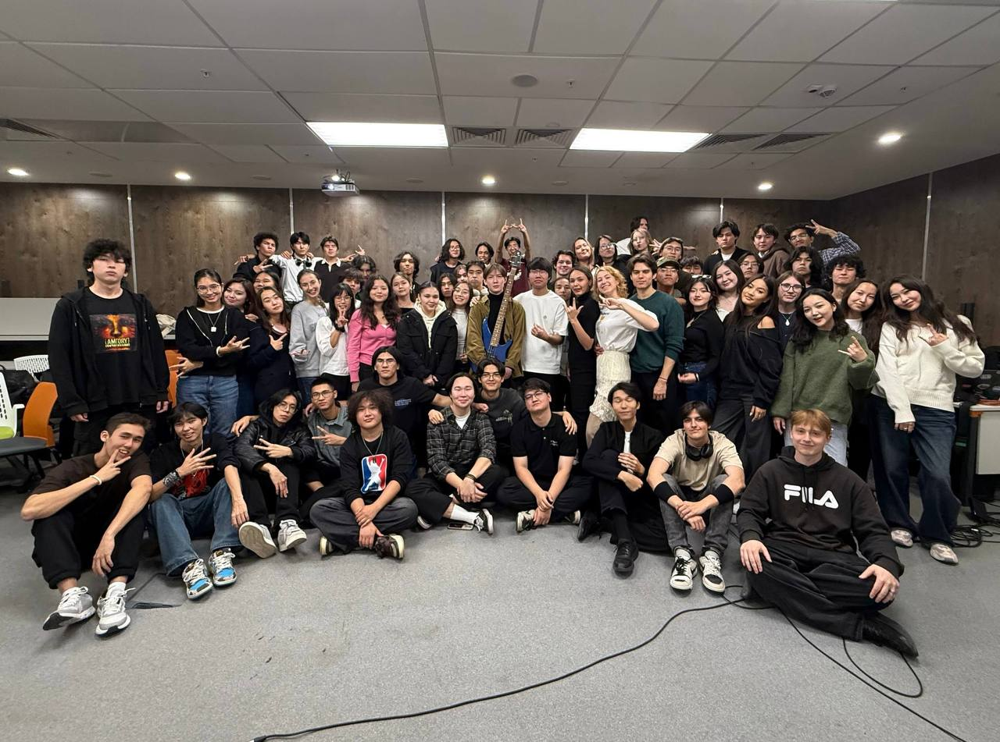

Founded in 2024 at
AITU,
our music club brings together student musicians,
sound techs, and vocalists across all academic degrees.
Our headquarters is located in Room C1.1.142,
providing a specialized soundproof studio where student
bands rehearse across multiple genres.
The facility operates daily from 09:00 to 22:00.
Because multiple ensembles share the rehearsal area,
members book practice slots in advance as described in Booking a Rehearsal Slot on this page.
The club accommodates a diverse sonic palette.
We feature instrumental tracks for
electric guitar, bass, drums, keyboards, saxophone, and violin,
alongside solo and backing vocalists.
Every rehearsal session adheres to the principle that
musical practice builds stage confidence:
Show must go on, no matter how tough the university exam week gets.
Currently, general registration for new instrumentalists is
active for the autumn term.

President's Welcome & Club Guiding Motto
“Our main goal is to give every student the chance to discover their creative side.
The show must go on: on the stage and in the rehearsal room we build
a true musical family.”
— Aivaruly Aknazar,
President of AITU Music Club, interview recorded in room
C1.1.142 on September 10, 2024.
Club Structure & Departments
Our ensemble welcomes students starting from their
1st year of university studies.
Instrumental & Performance Tracks
Rhythm and String Section
Electric Lead & Rhythm Guitar
4-String Electric Bass
Acoustic Drum Kit & Percussion
Melodic & Classical Section
Alto and Tenor Saxophone
Acoustic and Electric Violin
Digital Stage Piano & Synthesizers
Vocal Department
Solo Lead Vocalists
Backing Harmony Vocalists
Executive Committee Roles
Aivaruly Aknazar — Club President
Oversees general strategic direction, concert permits,
administrative coordination, and inter-university
performance events.
Bilyalova Adiya — Head of Marketing
Manages social media presence on Instagram, photographic
coverage, promotional posters, and event announcements.
Abrazakov Ramil — Head of Technical Support
Directs audio engineering, cable routing, instrument
maintenance, live mixer calibration, and soundcheck
arrangements.
Booking a Rehearsal Slot
Room C1.1.142 is open every day from 09:00 to 22:00. The weekly slots already taken by registered bands
are listed in the rehearsal schedule on the home page.
To reserve a free slot, write to the club and include:
the name of your band or ensemble and the number of musicians;
the date and the start and end time of the session (from 1 to 3 hours);
your AITU student email address.
Requests must be sent at least 24 hours in advance, by
email
or by phone at +7 (778) 057-32-42.
Physical Location: Astana IT University,
EXPO Business Center, Block C1,
Room C1.1.142.
Rehearsal hours: Monday through Sunday, 09:00 – 22:00.
Operating rules strictly enforced.